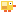
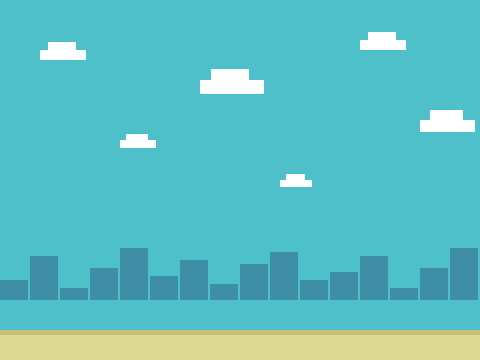

飞扬的小鸟
五次课做出一个完整的街机游戏——先玩成品 → 拆解 → 自己试 → 卡住才看参考做法。上课请用 放映版；本页是全文与进度。
一、开课之前
先玩 1 分钟
👨👩👦 一起 · 先玩 1 分钟
先把成品玩一遍——你接下来五次课，就是要亲手做出它。
游戏解剖图
👨👩👦 一起 · 游戏解剖图（自上而下）
整个游戏 = 五大模块，五次课各做一块：
第 1 课
第 2 课
第 3 课
第 4 课
第 5 课
素材清单
👨👩👦 一起 · 素材
两个角色就够：小鸟、管道（素材包里有；背景用自带库）。

小鸟素材包导入
背景素材包自带课程进度表
👨👩👦 一起 · 课程进度表
二、五次课
第 1 课 · 自由落体
👨👩👦 一起 · 本章目标
👨👩👦 一起 · 效果与拆解
- 新学速度变量— 下落越来越快
- 新学每帧积分— 先加速度再挪位置
- 新学地面判断— 落地就停住
👦 孩子自己 · 自己试试（先别翻答案）
先自己试 10 分钟：素材包里全有，先导入摆好；想怎么做就怎么做，改坏了绿旗能复原；卡住超过 5 分钟，再看下面的参考做法。
👨👩👦 一起 · 概念 · 速度
速度 = 每帧挪多少
- 速度 0 起步，每帧加 −0.5（往下）
- y 坐标每帧增加"速度"——负数就是掉
- 落地判断：y ≤ −160 就钉住
👨👩👦 一起 · 参考做法（卡住才看）
- 导入小鸟，站到左侧
当绿旗被点击 移到 x: (-100) y: (0) 将 [速度] 设为 (0)
变量 速度 选「仅适用于当前角色」✅ 小鸟停在左侧半空 - 每帧：先挪，再加速
重复执行 将y坐标增加 (速度) 将 [速度] 增加 (-0.5)🧰 积木在：运动变量✅ 小鸟越掉越快——自由落体 - 落地就停住
如果 <(y 坐标) < (-160)> 那么 将y坐标设为 (-160) 将 [速度] 设为 (0)✅ 落地不再下坠（判负第 4 课再说）
👨👩👦 一起 · 验收
- ⬇️ 松手就加速下坠
- 🛑 落地停住不穿地
- ↩️ 绿旗回到起点
重力是这游戏的基础——第 2 课给它一双翅膀。
👨👩👦 一起 · 试一试
重力的手感
🧑 家长先看 · 常见错误
坠落两病
👦 孩子自己 · 进阶挑战 · 三选一
运动
外观
声音
👦 孩子自己 · 课后回顾
第 2 课 · 点跳飞行
👨👩👦 一起 · 本章目标
👨👩👦 一起 · 效果与拆解
- 已有重力循环— 第 1 课原样保留
- 新学当按下空格— 事件帽独立成段
- 新学速度 = 6— 起跳就是给速度充值
- 已有每帧积分— 充值花完继续掉
👦 孩子自己 · 自己试试（先别翻答案）
先自己试 10 分钟：素材包里全有，先导入摆好；想怎么做就怎么做，改坏了绿旗能复原；卡住超过 5 分钟，再看下面的参考做法。
👨👩👦 一起 · 概念 · 事件帽
当按下 = 另一条时间线
- 「当按下 空格 键」自己就是循环
- 起跳只改速度，不动 y
- 事件里的改动，下一帧主循环就能用到
👨👩👦 一起 · 参考做法（卡住才看）
- 起跳脚本独立成段
当按下 [空格] 键 将 [速度] 设为 (6)
🧰 积木在：事件变量（和主循环并排，不要塞进去）✅ 按一下空格，小鸟向上窜一小段 - 鼠标党同款
当角色被点击 将 [速度] 设为 (6)
想用"点舞台"：加「当舞台被点击」类积木或保留空格即可✅ 鼠标点和空格都能飞
👨👩👦 一起 · 验收
- 👆 点一下飞一下
- ⏬ 不点就一直掉
- 🚫 连点不能无限上天（撞顶留第 4 课）
到这步，游戏"活"了——但还没有东西拦你。
👨👩👦 一起 · 试一试
起跳手感
🧑 家长先看 · 常见错误
飞不起来两种
👦 孩子自己 · 进阶挑战 · 三选一
声音
侦测
外观
👦 孩子自己 · 课后回顾
第 3 课 · 管道来袭
👨👩👦 一起 · 本章目标
👨👩👦 一起 · 效果与拆解
- 已有克隆— 打砖块学过的克隆
- 新学定时生成— 等待随机秒再克隆
- 新学随机高度— y 在区间取随机
- 新学移动+销毁— 出左界删除克隆体
👦 孩子自己 · 自己试试（先别翻答案）
先自己试 10 分钟：素材包里全有，先导入摆好；想怎么做就怎么做，改坏了绿旗能复原；卡住超过 5 分钟，再看下面的参考做法。
👨👩👦 一起 · 参考做法（卡住才看）
- 本体隐身，定时发车
当绿旗被点击 隐藏 重复执行 等待 (1.5) 秒 移到 x: (250) y: (在 (-100) 和 (60) 之间取随机数) 克隆 [自己]🧰 积木在：控制运动运算✅ 每 1.5 秒右侧冒出一根随机高度的管道 - 分身：一路向左，出界消失
当作为克隆体启动时 显示 重复执行直到 <(x 坐标) < (-250)> 将x坐标增加 (-3) 删除此克隆体✅ 管道排着队从右往左走，出屏即消失 - 和世界连起来
管道的 x 匀速、小鸟固定 x——看起来是小鸟在飞，其实是世界在动。这一招所有跑酷游戏都在用✅ 理解"世界在动"，第 5 课加速就懂了
👨👩👦 一起 · 验收
- 🚰 管道间隔均匀不断档
- 🎲 高度每根都不一样
- ♻️ 永不叠机（出界即删）
👨👩👦 一起 · 试一试
节奏调校
🧑 家长先看 · 常见错误
管道三怪
👦 孩子自己 · 进阶挑战 · 三选一
运动
外观
控制
👦 孩子自己 · 课后回顾
第 4 课 · 一触即溃
👨👩👦 一起 · 本章目标
👨👩👦 一起 · 效果与拆解
- 已有碰到检测— 打砖块碎砖那招
- 新学三个条件拼一起— 碰到 / 落地 / 顶天，"或"起来
- 新学停止全部— 一票否决，全场冻结
- 已有广播— 喊一声游戏结束
👦 孩子自己 · 自己试试（先别翻答案）
先自己试 10 分钟：素材包里全有，先导入摆好；想怎么做就怎么做，改坏了绿旗能复原；卡住超过 5 分钟，再看下面的参考做法。
👨👩👦 一起 · 参考做法（卡住才看）
- 一个判断管三种死法
如果 <<碰到 [管道]?> 或 <<(y 坐标) < (-158)> 或 <(y 坐标) > (175)>>> 那么 广播 [游戏结束] 停止 [全部脚本]🧰 积木在：放进小鸟主循环每帧检查；「或」把三种危险并联✅ 撞管道、拍在地上、顶到天，任一发生立刻全场停 - 结局画面
当接收到 [游戏结束] 移到最 [前面] 说 [Game Over · 按绿旗再来] (5) 秒
可以在小鸟上"说"，也可以画一块 Game Over 横幅角色——自己画一次更爽✅ 出局瞬间定格 + 提示重开
👨👩👦 一起 · 验收
- 💥 碰管道立刻停
- 🛑 落地 / 顶天同样判负
- ↩️ 绿旗一切复原
能赢能输，才算游戏。
👨👩👦 一起 · 试一试
判定宽松度
🧑 家长先看 · 常见错误
判负两坑
👦 孩子自己 · 进阶挑战 · 三选一
运动
运动
事件
👦 孩子自己 · 课后回顾
第 5 课 · 分数与收官
👨👩👦 一起 · 本章目标
👨👩👦 一起 · 效果与拆解
- 新学计时器计分— 活着就有分
- 新学难度曲线— 速度随分数涨
- 已有广播判负— 第 4 课
- 已有发布会— 三句话
👦 孩子自己 · 自己试试（先别翻答案）
先自己试 10 分钟：素材包里全有，先导入摆好；想怎么做就怎么做，改坏了绿旗能复原；卡住超过 5 分钟，再看下面的参考做法。
👨👩👦 一起 · 概念 · 难度曲线
难度 = 会涨的数字
- 速度先用变量装，别写死
- 每 5 分速度 +0.5，封顶 6
- 玩家能感觉到在变快就够了
👨👩👦 一起 · 参考做法（卡住才看）
- 分数 = 坚持的秒数
当绿旗被点击 将 [分数] 设为 (0) 计时器归零 重复执行 等待 (1) 秒 将 [分数] 增加 (1)🧰 积木在：写在舞台绿旗脚本；「计时器归零」「计时器」在侦测（本页没用计时器值，纯秒表节奏也可以）✅ 活着每秒 +1，出局即停 - 世界速度做成变量
当绿旗被点击 将 [世界速度] 设为 (3) 重复执行 如果 <(分数) > (10)> 那么 将 [世界速度] 设为 (4) 如果 <(分数) > (20)> 那么 将 [世界速度] 设为 (5)管道克隆体里"将x坐标增加 (−3)"的 3 换成 (世界速度)（全局变量）✅ 10 分后世界明显变快 - 发布会：三句话
1️⃣ 我做了什么2️⃣ 最难在哪3️⃣ 想怎么改全家围观你打一局最高分✅ 讲满三句，本作收官
👨👩👦 一起 · 验收
- 🎒 分数随时间上涨
- ⚡ 分数越高世界越快
- 🥇 记下自己的最高分
- 🎤 发布会讲满三句
第二个街机游戏完成——下一关去太空打陨石。
👨👩👦 一起 · 试一试
曲线手感
🧑 家长先看 · 常见错误
计分两坑
👦 孩子自己 · 进阶挑战 · 三选一
变量
声音
外观
👦 孩子自己 · 课后回顾
三、本作总结
- 第 1 课📉 变量·速度
- 第 2 课⚡ 事件·按键
- 第 3 课👥 克隆
- 第 4 课🎯 侦测·碰到
- 第 5 课⏱ 计时器
- 世界在动的错觉：管道左移 = 小鸟右飞
- 速度积分：先加速度、再动位置 = 真实的坠落
- 事件帽与主循环：两条时间线同时跑、互不打断